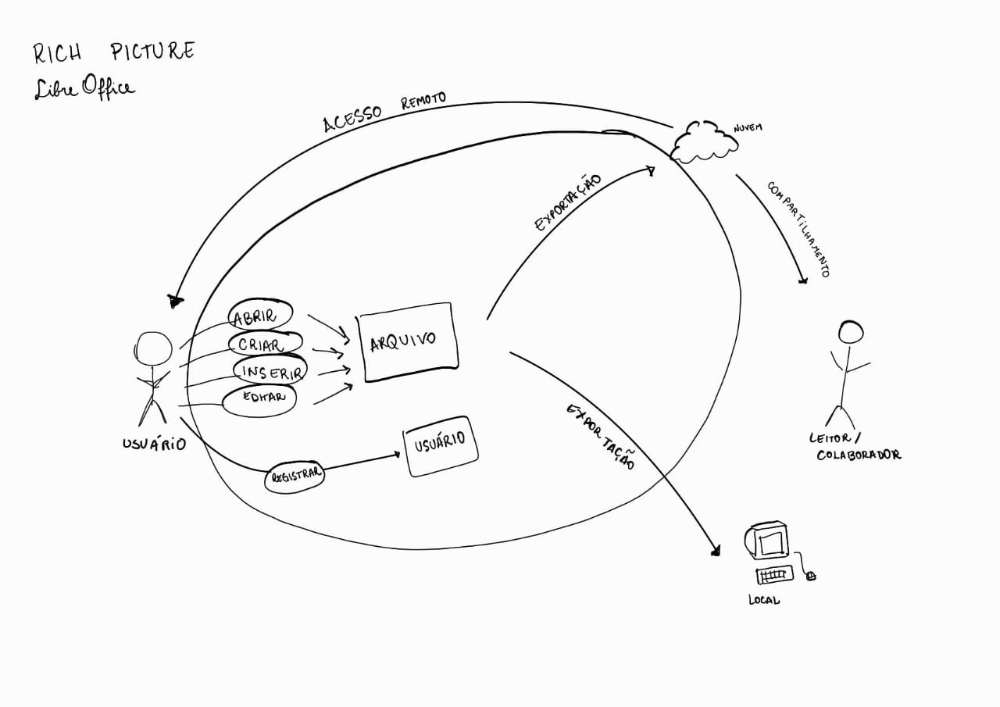

Aplicativo Escolhido
Introdução
O aplicativo escolhido foi o LibreOfficeWriter. Os integrantes da equipe decidiram em consenso e seguir será apresentado o motivo da escolha, o Rich Picture e o termo de uso.
Critérios para escolha
- Aplicativo não ter sido trabalhado na disciplina;
- Facilidade de contato com o público-alvo;
- Complexidade do aplicativo;
- Disponibilidade de informações;
- Open Source;
Motivações para a escolha
Baseado nos critérios citados anteriormente e após intrução do professor, o grupo decidiu por escolher o Libre Office Writer por alguns motivos.
-
O público alvo é amplo e de fácil acesso. O aplicativo apresenta funcionalidades que são utilizadas por diversos grupos de pessoas;
-
O aplicativo é open source então não haveria dificulade ou restrições para utilizá-lo na disciplina;
-
O aplicativo não tem uma complexidade muito grande, mas ainda assim possui muitas funcionalidades que podem ser exploradas no decorrer da disciplina.
Rich Picture
O Rich Picture é uma ferramenta visual para expressar ideias e analisar problemas, tudo isso de forma informal e de fácil entendimento. No contexto da engenharia de software, ele é utilizado para abstrair o funcionamento de sistemas de software e se apresenta na forma de um diagrama com alguns elementos básicos como: atores, processos, armazenamento de dados, setas e limites do sistema. 1
A figura 1 apresenta o Rich Picture do aplicativo Libre Office Writer

Figura 1: Rich Picture (Fonte: Ana Leticia e Raphaela. 2023).
Termos de uso
A fim de realizar o trabalho dentro das normas legais, o grupo verificou os termos de uso do Libre Office Writer para garantir que possuíamos permissão explícita para realizar a análise durante o tempo da disciplina. Foi constatado que não há restrições para a utilização do app na disciplina.
A licença deixa explícito que:
"O LibreOffice é Software livre. Dado sua origem no OpenOffice.org, o LibreOffice é licenciado sob a licença LGPLv3 (a menos de onde for indicado), oferecendo liberdades e responsabilidades essenciais.
O LibreOffice está licenciado sob os termos da LGPLv3 (ou posteriores) e pela MPL - Mozilla Public License (ou posteriores). Significa que você está livre para usá-lo para fins pessoais e comerciais, que você está livre para copiar e distribuir o software, e que você está livre para modificar e reestruturar o código-fonte e criar obras derivadas."
Referências
1. SERRANO, Maurício; SERRANO, Milene. Requisitos - Aula 4. Aprender 3. Distrito Federal, 2016. Disponível em: <https://aprender3.unb.br/pluginfile.php/2523050/mod_resource/content/4 Requisitos%20-%20Aula%2004%20-%20Parte%202%20RichPicture.pdf>. Acesso em: 16/04/2023.
Histórico de Versão
| Versão | Data | Descrição | Autor | Revisor |
|---|---|---|---|---|
| 1.0 | 20/09/20233 | Criação do documento | Ana Luíza | Rafael |